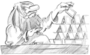
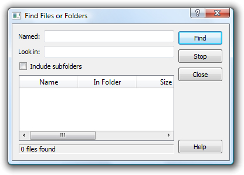
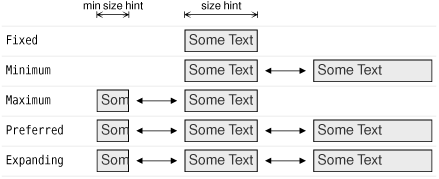

Every widget that is placed on a form must be given an appropriate size and position. Qt provides several classes that lay out widgets on a form: QHBoxLayout, QVBoxLayout, QGridLayout, and QStackedLayout. These classes are so convenient and easy to use that almost every Qt developer uses them, either directly in source code or through Qt Designer.
Another reason to use Qt's layout classes is that they ensure that forms adapt automatically to different fonts, languages, and platforms. If the user changes the system's font settings, the application's forms will respond immediately, resizing themselves if necessary. And if you translate the application's user interface to other languages, the layout classes take into consideration the widgets' translated contents to avoid text truncation.
Other classes that perform layout management include QSplitter, QScrollArea, QMainWindow, and QMdiArea. All of these classes provide a flexible layout that the user can manipulate. For example, QSplitter provides a splitter bar that the user can drag to resize widgets, and QMdiArea offers support for MDI (multiple document interface), a means of showing many documents simultaneously within an application's main window. Because they are often used as alternatives to the layout classes proper, we cover them in this chapter.
There are three basic ways of managing the layout of child widgets on a form: absolute positioning, manual layout, and layout managers. We will look at each of these approaches in turn, using the Find File dialog shown in Figure 6.1 as our example.

Absolute positioning is the crudest way of laying out widgets. It is achieved by assigning hard-coded sizes and positions to the form's child widgets and a fixed size to the form. Here's what the FindFileDialog constructor looks like using absolute positioning:
FindFileDialog::FindFileDialog(QWidget *parent)
: QDialog(parent)
{
...
namedLabel->setGeometry(9, 9, 50, 25);
namedLineEdit->setGeometry(65, 9, 200, 25);
lookInLabel->setGeometry(9, 40, 50, 25);
lookInLineEdit->setGeometry(65, 40, 200, 25);
subfoldersCheckBox->setGeometry(9, 71, 256, 23);
tableWidget->setGeometry(9, 100, 256, 100);
messageLabel->setGeometry(9, 206, 256, 25);
findButton->setGeometry(271, 9, 85, 32);
stopButton->setGeometry(271, 47, 85, 32);
closeButton->setGeometry(271, 84, 85, 32);
helpButton->setGeometry(271, 199, 85, 32);
setWindowTitle(tr("Find Files or Folders"));
setFixedSize(365, 240);
}Absolute positioning has many disadvantages:
The user cannot resize the window.
Some text may be truncated if the user chooses an unusually large font or if the application is translated into another language.
The positions and sizes must be calculated manually. This is tedious and error-prone, and makes maintenance painful.
An alternative to absolute positioning is manual layout. With manual layout, the widgets are still given absolute positions, but their sizes are made proportional to the size of the window rather than being entirely hard-coded. This can be achieved by reimplementing the form's resizeEvent() function to set its child widgets' geometries:
FindFileDialog::FindFileDialog(QWidget *parent)
: QDialog(parent)
{
...
setMinimumSize(265, 190);
resize(365, 240);
}
void FindFileDialog::resizeEvent(QResizeEvent * /* event */)
{
int extraWidth = width() - minimumWidth();
int extraHeight = height() - minimumHeight();
namedLabel->setGeometry(9, 9, 50, 25);
namedLineEdit->setGeometry(65, 9, 100 + extraWidth, 25);
lookInLabel->setGeometry(9, 40, 50, 25);
lookInLineEdit->setGeometry(65, 40, 100 + extraWidth, 25);
subfoldersCheckBox->setGeometry(9, 71, 156 + extraWidth, 23);
tableWidget->setGeometry(9, 100, 156 + extraWidth,
50 + extraHeight);
messageLabel->setGeometry(9, 156 + extraHeight, 156 + extraWidth,
25);
findButton->setGeometry(171 + extraWidth, 9, 85, 32);
stopButton->setGeometry(171 + extraWidth, 47, 85, 32);
closeButton->setGeometry(171 + extraWidth, 84, 85, 32);
helpButton->setGeometry(171 + extraWidth, 149 + extraHeight, 85,
32);
}
In the FindFileDialog constructor, we set the form's minimum size to 265 x 190 and the initial size to 365 x 240. In the resizeEvent() handler, we give any extra space to the widgets that we want to grow. This ensures that the form scales smoothly when the user resizes it.
Just like absolute positioning, manual layout requires a lot of hard-coded constants to be calculated by the programmer. Writing code like this is tiresome, especially if the design changes. And there is still the risk of text truncation. We can avoid this risk by taking account of the child widgets' size hints, but that would complicate the code even further.
The most convenient solution for laying out widgets on a form is to use Qt's layout managers. The layout managers provide sensible defaults for every type of widget and take into account each widget's size hint, which in turn typically depends on the widget's font, style, and contents. Layout managers also respect minimum and maximum sizes, and automatically adjust the layout in response to font changes, content changes, and window resizing. A resizable version of the Find File dialog is shown in Figure 6.2.
The three most important layout managers are QHBoxLayout, QVBoxLayout, and QGridLayout. These classes are derived from QLayout, which provides the basic framework for layouts. All three classes are fully supported by Qt Designer and can also be used directly in code.
Here's the FindFileDialog code using layout managers:
FindFileDialog::FindFileDialog(QWidget *parent)
: QDialog(parent)
{
...
QGridLayout *leftLayout = new QGridLayout;
leftLayout->addWidget(namedLabel, 0, 0);
leftLayout->addWidget(namedLineEdit, 0, 1);
leftLayout->addWidget(lookInLabel, 1, 0);
leftLayout->addWidget(lookInLineEdit, 1, 1);
leftLayout->addWidget(subfoldersCheckBox, 2, 0, 1, 2);
leftLayout->addWidget(tableWidget, 3, 0, 1, 2);
leftLayout->addWidget(messageLabel, 4, 0, 1, 2);
QVBoxLayout *rightLayout = new QVBoxLayout;
rightLayout->addWidget(findButton);
rightLayout->addWidget(stopButton);
rightLayout->addWidget(closeButton);
rightLayout->addStretch();
rightLayout->addWidget(helpButton);
QHBoxLayout *mainLayout = new QHBoxLayout;
mainLayout->addLayout(leftLayout);
mainLayout->addLayout(rightLayout);
setLayout(mainLayout);
setWindowTitle(tr("Find Files or Folders"));
}
The layout is handled by one QHBoxLayout, one QGridLayout, and one QVBoxLayout. The QGridLayout on the left and the QVBoxLayout on the right are placed side by side by the outer QHBoxLayout. The margin around the dialog and the spacing between the child widgets are set to default values based on the current widget style; they can be changed using QLayout::setContentsMargins() and QLayout::setSpacing().
The same dialog could be created visually in Qt Designer by placing the child widgets in their approximate positions; selecting those that need to be laid out together; and clicking Form|Lay Out Horizontally, Form|Lay Out Vertically, or Form|Lay Out in a Grid. We used this approach in Chapter 2 for creating the Spreadsheet application's Go to Cell and Sort dialogs.
Using QHBoxLayout and QVBoxLayout is fairly straightforward, but using QGridLayout is a bit more involved. QGridLayout works on a two-dimensional grid of cells. The QLabel in the top-left corner of the layout is at position (0, 0), and the corresponding QLineEdit is at position (0, 1). The QCheckBox spans two columns; it occupies the cells in positions (2, 0) and (2, 1). The QTreeWidget and the QLabel beneath it also span two columns. The calls to QGridLayout::addWidget() have the following syntax:
layout->addWidget(widget, row, column, rowSpan, columnSpan);
Here, widget is the child widget to insert into the layout, (row, column) is the top-left cell occupied by the widget, rowSpan is the number of rows occupied by the widget, and columnSpan is the number of columns occupied by the widget. If omitted, the rowSpan and columnSpan arguments default to 1.
The addStretch() call tells the vertical layout manager to consume space at that point in the layout. By adding a stretch item, we have told the layout manager to put any excess space between the Close button and the Help button. In Qt Designer, we can achieve the same effect by inserting a spacer. Spacers appear in Qt Designer as blue "springs".
Using layout managers provides additional benefits to those we have discussed so far. If we add a widget to a layout or remove a widget from a layout, the layout will automatically adapt to the new situation. The same applies if we call hide() or show() on a child widget. If a child widget's size hint changes, the layout will be automatically redone, taking into account the new size hint. Also, layout managers automatically set a minimum size for the form as a whole, based on the form's child widgets' minimum sizes and size hints.
In the examples presented so far, we have simply put widgets into layouts and used spacer items (stretches) to consume any excess space. In some cases, this isn't sufficient to make the layout look exactly the way we want. In these situations, we can adjust the layout by changing the size policies and size hints of the widgets being laid out.
A widget's size policy tells the layout system how it should stretch or shrink. Qt provides sensible default size policies for all its built-in widgets, but since no single default can account for every possible layout, it is still common for developers to change the size policies for one or two widgets on a form. A QSizePolicy has both a horizontal and a vertical component. Here are the most useful values:
Fixed means that the widget cannot grow or shrink. The widget always stays at the size of its size hint.
Minimum means that the widget's size hint is its minimum size. The widget cannot shrink below the size hint, but it can grow to fill available space if necessary.
Maximum means that the widget's size hint is its maximum size. The widget can be shrunk to its minimum size hint.
Preferred means that the widget's size hint is its preferred size, but that the widget can still shrink or grow if necessary.
Expanding means that the widget can shrink or grow and that it is especially willing to grow.
Figure 6.4 summarizes the meaning of the different size policies, using a QLabel showing the text "Some Text" as an example.

In the figure, Preferred and Expanding are depicted the same way. So, what is the difference? When a form that contains both Preferred and Expanding widgets is resized, extra space is given to the Expanding widgets, while the Preferred widgets stay at their size hint.
There are two other size policies: MinimumExpanding and Ignored. The former was necessary in a few rare cases in older versions of Qt, but it isn't useful anymore; the preferred approach is to use Expanding and reimplement minimumSizeHint() appropriately. The latter is similar to Expanding, except that it ignores the widget's size hint and minimum size hint.
In addition to the size policy's horizontal and vertical components, the QSizePolicy class stores a horizontal and a vertical stretch factor. These stretch factors can be used to indicate that different child widgets should grow at different rates when the form expands. For example, if we have a QTreeWidget above a QTextEdit and we want the QTextEdit to be twice as tall as the QTreeWidget, we can set the QTextEdit's vertical stretch factor to 2 and the QTreeWidget's vertical stretch factor to 1.
Yet another way of influencing a layout is to set a minimum size, a maximum size, or a fixed size on the child widgets. The layout manager will respect these constraints when laying out the widgets. And if this isn't sufficient, we can always derive from the child widget's class and reimplement sizeHint() to obtain the size hint we need.